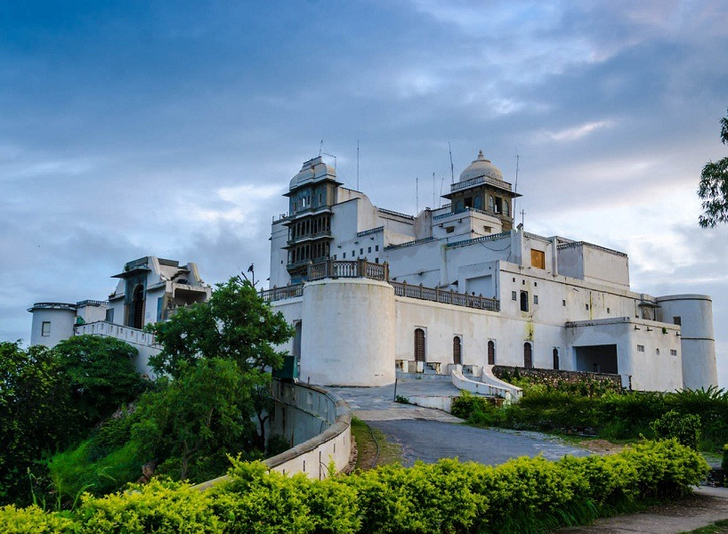

Sajan Garh (Monsoon Palace)
The Monsoon Palace, also known as the Sajjan Garh Palace, is a hilltop palatial residence in the city of Udaipur, Rajasthan in India, overlooking the Fateh Sagar Lake. It is named Sajjangarh after Maharana Sajjan Singh (1874–1884) of the Mewar Dynasty, who it was built for in 1884. The palace offers a panoramic view of the city's lakes, palaces and surrounding countryside. It was built chiefly to watch the monsoon clouds; hence, appropriately, it is popularly known as Monsoon Palace. It is said that the Maharana built it at the top of the hill to get a view of his ancestral home, Chittaurgarh. Previously owned by the Mewar royal family, it is now under the control of the Forest Department of the Government of Rajasthan and has recently been opened to the public. The palace provides a beautiful view of the sunset.
Its builder, Maharana Sajjan Singh, originally planned to make it a five-storey astronomical centre. The plan was cancelled with Maharana Sajjan Singh's premature death. It was then turned into a monsoon palace and hunting lodge.
High in the Aravalli Hills, just outside Udaipur, the Palace is illuminated in the evenings, giving a golden orange glow (see image in the infobox).[9] The palace was used in the 1983 James Bond film Octopussy as the residence of Kamal Khan, an exiled Afghan prince.
History
The history of the palace reflects the history of the Mewar kingdom. Sajjan Singh, Maharana (b. 18 July 1859 d. 23 December 1884), the initial builder of the Monsoon Palace was the seventy–second ruler of the Mewar Dynasty (1874–1884) and ruled from Udaipur for a short period of 10 years until his untimely death. The Mewar dynasty traces its history to Guhil who founded the Mewar State in 568 AD.[7] Sajjan Singh came to the throne when he was 15 years old. However, his uncle Sohan Singh challenged his right to the crown and even plotted through astrologers, who said the timing for the coronation was not appropriate. Fortunately for him the then British agent, who was in favour of Sajjan Singh, intervened and persuaded the astrologers to give a favourable date for the crowning. The eventual Coronation of Sajjan Singh took place two years after this. As the trouble-maker uncle was still persisting with his obstructions towards the newly crowned Maharana, his property was confiscated and he was eventually imprisoned.
After he was invested in 1876 the Maharana, considered an enlightened ruler and a "man of vision"[by whom?], launched a massive programme of developmental activities in his kingdom, in particular, enlarging infrastructure facilities such as roads, water supply and other civil works. He also introduced civil administration and courts. He also improved the general environment of Udaipur by afforestation and lake improvements. He had Lake Pichola desilted and the masonry dam re-built to improve storage capacity, as well as preserving the historical heritage in line with his personal interest in the arts and culture. The most ambitious project he undertook was building the Sajjan Garh Palace, or the Monsoon Palace, as a western backdrop to Udaipur city.
It was during Sajjan Singh's rule that Udaipur gained recognition as the second Municipality in India, after Bombay. In recognition of his outstanding achievements in preserving and developing the Mewar kingdom, and to remind him that his was a princely state under the British Raj, he was conferred the title of "Grand Commander of the Star of India" in November 1881 by Lord Ripon, on the occasion of Queen Victoria's crowning as the Empress of India
Structure
The palace, built with white marble, is located on Bansdara peak of the Aravalli hill range at an elevation of 944 m (3100 ft) above mean sea level, overlooking Lake Pichola from the west about 1,100 ft (340 m) below the palace. The intention of the original planner, Maharana Sajjan Singh, was to build a nine storey complex, basically as an astronomical centre and to keep track of the movement of monsoon clouds in the area surrounding the palace, and also to provide employment to people. It was also meant to serve as a resort for the royal family. Unfortunately, the Maharana died prematurely at the age of 26 (after only 10 years of rule between 1874 and 1884), which resulted in the shelving of his plans for some time. Before his death, he had built it partially, and it was subsequently completed by his successor king Maharana Fateh Singh who used it to watch the monsoon clouds. The Royal family also used this building as a hunting lodge.[1][3][6][7][9] The white marble palace has high turrets and guards regulating each of the towers. The palace has a grand central court with a staircase and many rooms and quarters. The palace is built on marble pillars, which are carved with exquisite motifs of leaves and flowers. The walls are plastered with lime mortar. At night, the illuminated palace with the Rajasthani architecture comprising domes, fountains and jharokas gives it a fairy tale beauty.